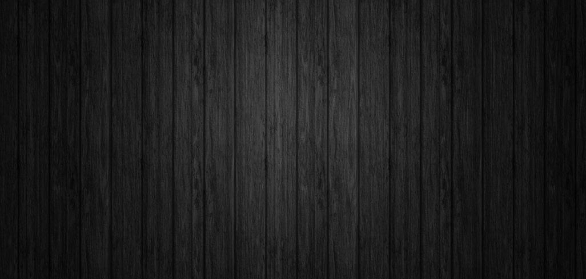

About Our Organization
❝ Changing the world one fold at a time ❞

Stress is a physiological problem that affects the body and mind and origami
tackles both these by engaging them equally. As the mind starts to get absorbed,
you give in to the moment and let yourself be distracted. As the design comes
into fruition, you feel a sense of satisfaction and achievement.
Origami helps develop hand-eye coordination, fine motor skills and mental concentration.
Use of the hands directly stimulates areas of the brain.
Origami is used in various therapeutic settings,
including art therapy and in stroke and injury rehabilitation.
Traditionally, it was believed that if one folded 1000 origami cranes, one's wish would come true.
It has also become a symbol of hope and healing during challenging times.